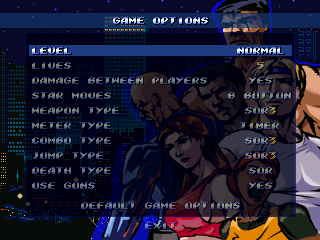

OPTIONS
GAME OPTIONS

DIFFICULTY LEVEL
Sets the game difficulty and the number of continues available.
OPCIONES
OPCIONES DE JUEGO
NIVEL DE DIFICULTAD
Define la dificultad general del juego y el número de continues.
15